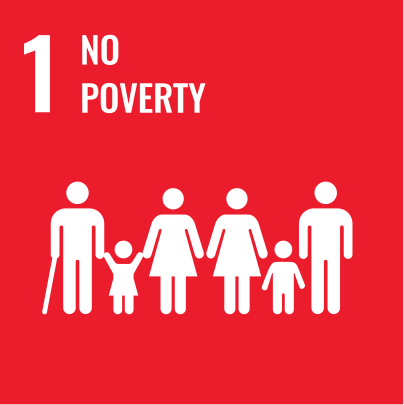
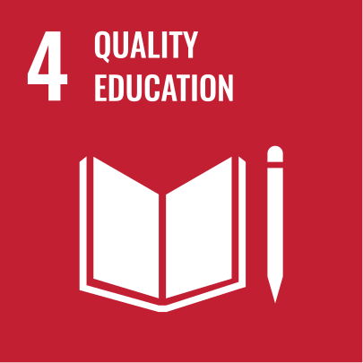
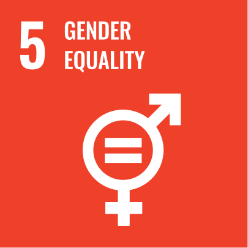
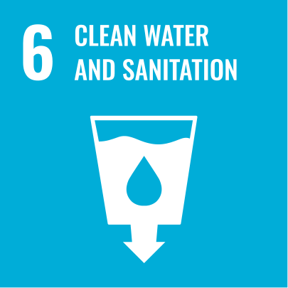
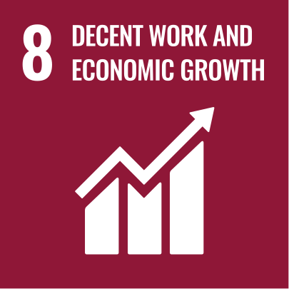
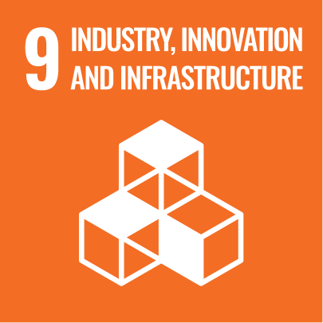
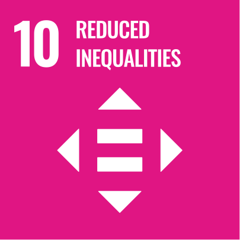
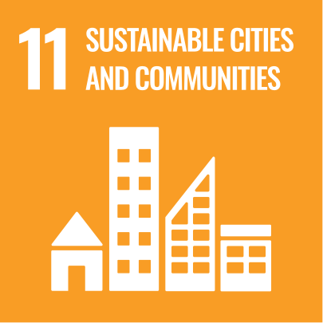
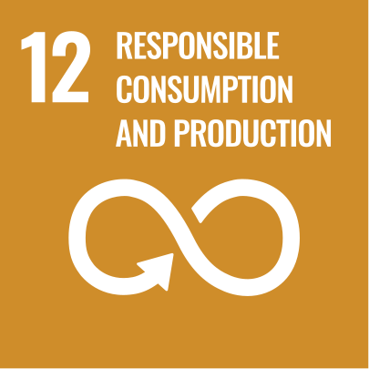
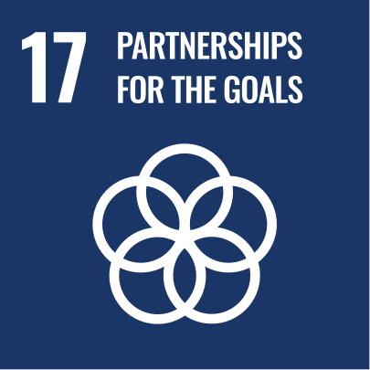

Desarrollo Humano Tecnológico
Somos una empresa social que impulsa el desarrollo humano a través de la tecnología, conectando capacidades humanas con sistemas reales de producción.
Si existe, lo conseguimos. Si no existe, lo creamos.
Somos una empresa social que impulsa el desarrollo humano a través de la tecnología, conectando capacidades humanas con sistemas reales de producción.
Tecnología aplicada para desarrollar capacidades, activar producción y abrir oportunidades reales.
ZOI acompaña a personas, empresas e instituciones en la adopción de tecnologías productivas: desde formación y prototipado hasta fabricación, automatización e integración operativa.
La tecnología no se queda en discurso: se convierte en aprendizaje, procesos, productos y valor económico medible.
Cada proyecto conecta diagnóstico, desarrollo de capacidades y ejecución real.
Analizamos necesidades, procesos y brechas para identificar dónde la tecnología puede generar valor real.
Formamos personas y equipos para usar herramientas de fabricación digital, automatización y producción tecnológica.
Convertimos ideas y capacidades en prototipos, soluciones, laboratorios, sistemas y entregables concretos.
Soluciones reales que integran tecnología, personas y producción.
Prototipado, producción y soluciones personalizadas mediante impresión 3D, CNC, corte láser, robótica y procesos híbridos.
Diseño e implementación de sistemas automatizados integrando hardware, software, flujos digitales y operación productiva.
Diseño, implementación y operación de Fab Labs, programas educativos, transferencia tecnológica y formación para el trabajo del futuro.
Trabajamos con distintos actores que necesitan pasar de la idea a la implementación.
Integramos formación, diseño, fabricación y automatización para responder a necesidades institucionales, empresariales, educativas y productivas.
Tecnología aplicada que se traduce en proyectos ejecutados, aprendizaje y alcance social.
Soluciones, programas y procesos implementados junto a aliados públicos, privados, educativos y sociales.
Personas formadas mediante experiencias de aprendizaje, capacitación técnica y tecnología aplicada.
Alcance generado de manera directa e indirecta a través de proyectos, educación, producción y transferencia tecnológica.
El trabajo de ZOI se alinea con objetivos globales que conectan educación, trabajo, innovación e inclusión.

Tecnología productiva como herramienta para abrir oportunidades económicas.

Formación tecnológica aplicada para personas, equipos e instituciones.

Acceso inclusivo a formación, tecnología y participación productiva.

Soluciones tecnológicas aplicadas a infraestructura, operación y mejora de entornos.

Capacidades productivas que abren oportunidades laborales y económicas.

Fabricación digital, automatización e infraestructura tecnológica aplicada.

Acceso a tecnología y aprendizaje para reducir brechas de participación.

Capacidades locales para diseñar, fabricar y mantener soluciones útiles.

Prototipado, fabricación e integración orientados a uso eficiente de recursos.

Trabajo colaborativo con instituciones, empresas, educación y comunidades.
Construir una infraestructura donde cualquier persona, empresa o institución pueda acceder a tecnología, desarrollar capacidades productivas y generar valor dentro de la economía del futuro.
Creemos que el desarrollo tecnológico solo tiene sentido si se traduce en desarrollo humano.
Si tienes un proyecto, una necesidad técnica, una institución que requiere tecnología o una idea que necesita hacerse realidad, conversemos.
Agente 24/7 Ver proyectos📧 info@zoi.ec